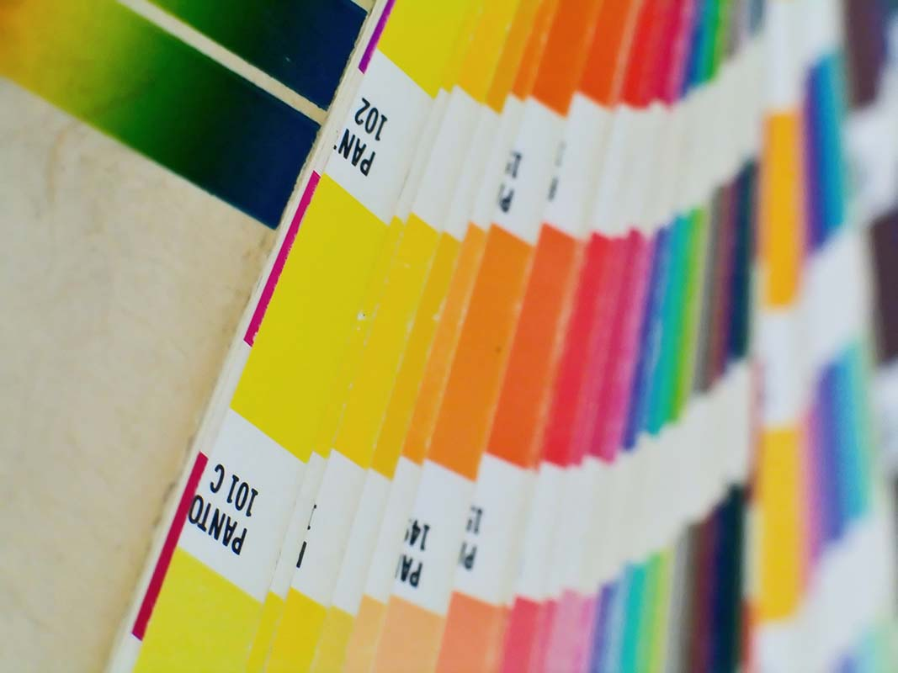

Sobre mí
Soy Clara Fernández Villegas, maquilladora profesional y estudiante de la Licenciatura en Diseño (CCC) en la Universidad Provincial de Córdoba. Combino dos disciplinas creativas que hablan el mismo idioma: la imagen.
Mi interés en el diseño nació de la mano del maquillaje: ambos trabajan con el color, la composición y la comunicación visual. Hoy estoy formándome para llevar esa sensibilidad al diseño gráfico, la ilustración y las piezas audiovisuales.
Me apasionan los colores, la ilustración y los motion graphics. Creo que el diseño tiene el poder de transformar una idea en algo que la gente realmente siente.

>
Imagen: Colors by Pantone 2.
Autor: wax115 (Wikimedia Commons).
Fuente: Wikimedia Commons. Archivo optimizado localmente en Photoshop.
Licencia: CC BY-SA 3.0
Formación
Actualmente curso la Licenciatura en Diseño (Ciclo de Complementación Curricular) en la Universidad Provincial de Córdoba (UPC), con orientación en Gráfica.
A esto sumo mi trayectoria como maquilladora profesional, disciplina en la que trabajo hace años y que me entrenó en el uso del color, la composición y la comunicación a través de la imagen.
Intereses y áreas de trabajo
Mis áreas de mayor interés dentro del diseño son la ilustración, el diseño de identidad visual y los motion graphics. También exploro la intersección entre el maquillaje artístico y el diseño gráfico como lenguajes visuales complementarios.
Referentes argentinos
Algunos diseñadores e ilustradores locales que me inspiran:
Pablo Bernasconi
Diseñador e ilustrador argentino, egresado de la UBA. Su técnica de collage conceptual lo llevó a publicar en The New York Times, Rolling Stone y medios de todo el mundo.
Ver portfolio →Isol (Marisol Misenta)
Ilustradora y escritora porteña con un estilo inconfundible: colores planos, ironía y una línea gráfica que mezcla lo pictórico con el cómic de autor.
Más sobre Isol →Margarita Cubino
Ilustradora argentina y parte del estudio de motion graphics Dosve. Referente local en animación de ilustraciones y diseño con color y energía.
Ver referencia →Encontrame en

Esta obra de Clara Fernández Villegas está bajo una Licencia Creative Commons Atribución 4.0 Internacional (CC BY 4.0) . Podés compartir y adaptar el material para cualquier propósito, incluso comercial, siempre que atribuyas la autoría correctamente.